Bem-vindo ao Grão & Alma
No coração do Porto, o Grão & Alma é o lugar perfeito para apreciar um café de especialidade, saborear momentos únicos e sentir-se em casa.
As Nossas Especialidades
Descobre os sabores que tornam o Grão & Alma único. Das nossas bebidas exclusivas às criações artesanais da cozinha, cada especialidade é preparada com dedicação, ingredientes selecionados e uma paixão especial pelos pequenos prazeres da vida.
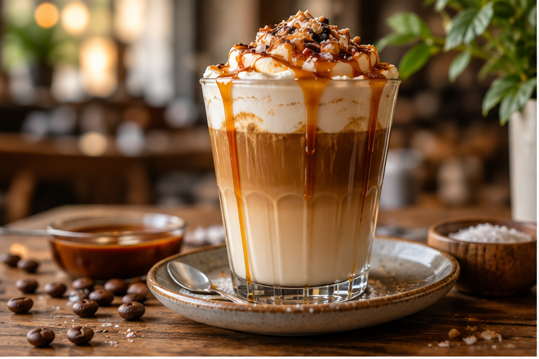
Latte de Caramelo Salgado
Uma combinação irresistível de espresso, leite cremoso e caramelo salgado, finalizada com um toque especial da casa.
Preço: 4,80€
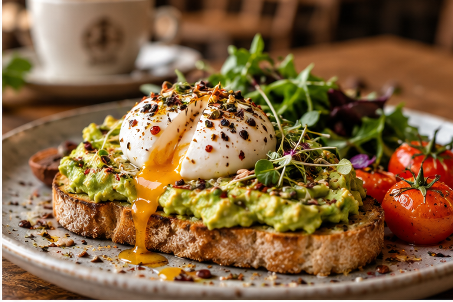
Tosta Grão & Alma
Pão artesanal de fermentação lenta, abacate fresco, ovos escalfados e um toque de especiarias.
Preço: 9,50€
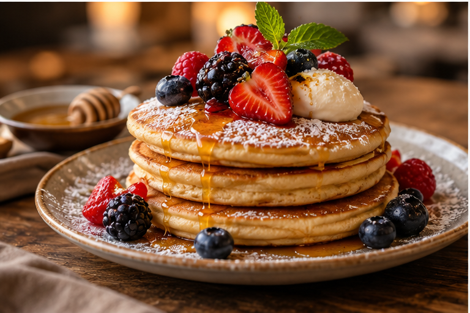
Panquecas da Casa
Panquecas fofas e acabadas de preparar, acompanhadas de frutos vermelhos, mel e creme de mascarpone.
Preço: 8,50€
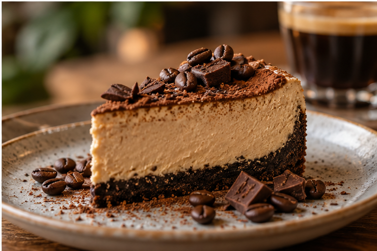
Cheesecake de Café
Cheesecake artesanal com uma delicada combinação de café, chocolate e uma base crocante de bolacha.
Preço: 4,90€
As nossas bebidas quentes
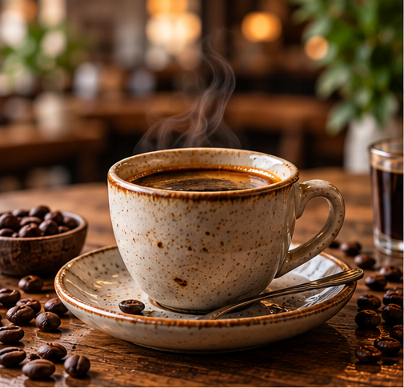
Espresso
Um café intenso e aromático, preparado com grãos selecionados.
Preço: 1,50€
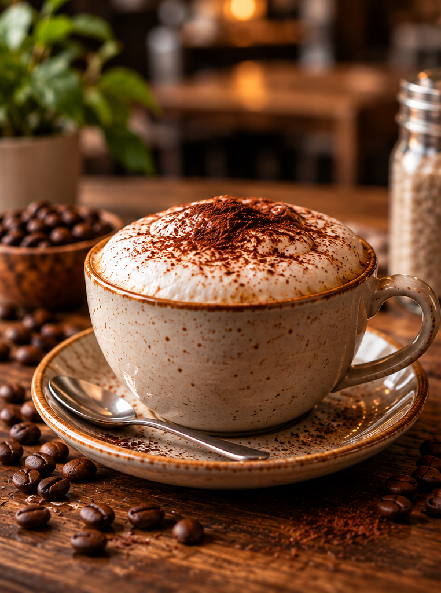
Cappuccino
A combinação perfeita de espresso, leite vaporizado e espuma cremosa.
Preço: 3,00€
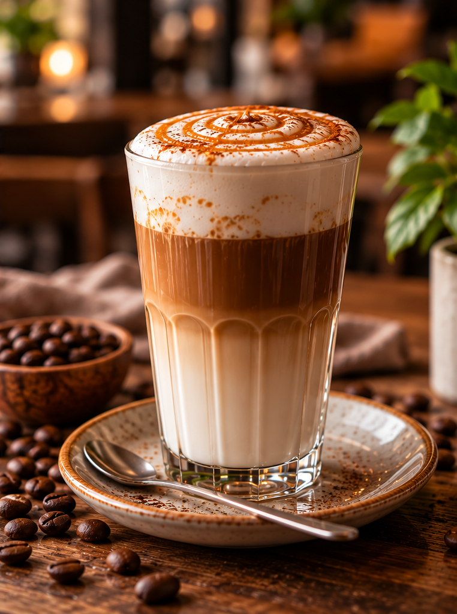
Latte Macchiato
Leite quente e cremoso com um toque suave de espresso.
Preço: 3,50€
Flat White
Duplo espresso combinado com leite vaporizado e uma textura suave e cremosa.
Preço: 3,80€
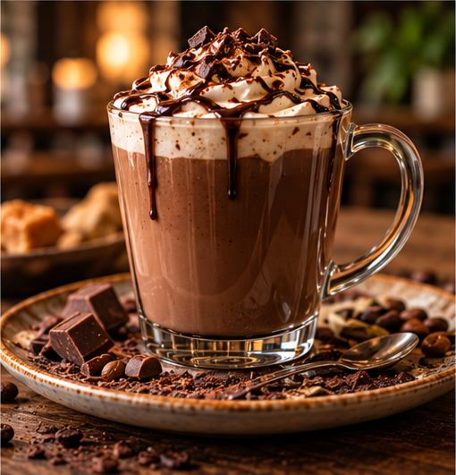
Mocha
Uma deliciosa combinação de espresso, chocolate e leite cremoso.
Preço: 4,20€
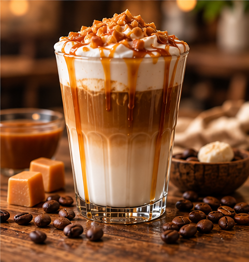
Caramel Macchiato
Espresso com leite vaporizado, espuma delicada e um irresistível toque de caramelo.
Preço: 4,50€
As nossas bebidas frias
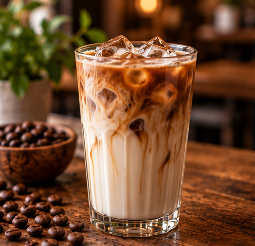
Iced Latte
Espresso de especialidade combinado com leite fresco e gelo, para uma experiência suave e refrescante.
Preço: 3,80€
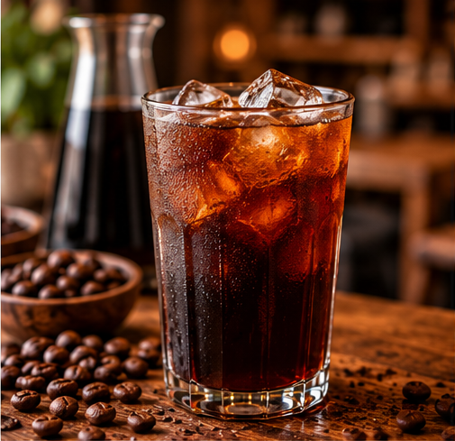
Cold Brew
Café extraído lentamente a frio, com um sabor equilibrado, notas suaves e uma frescura irresistível.
Preço: 3,50€
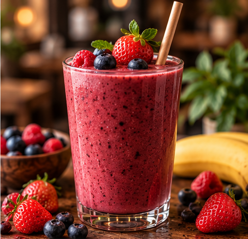
Smoothie de Frutos Vermelhos
Uma combinação refrescante de morangos, framboesas, mirtilos e banana, preparada no momento.
Preço: 4,50€
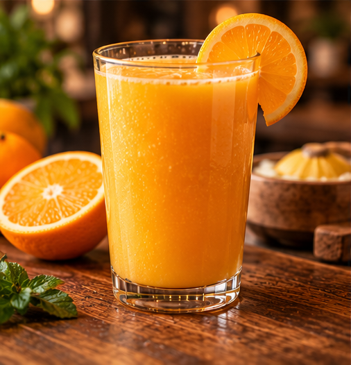
Sumo de Laranja Natural
Sumo de laranja acabado de espremer, naturalmente doce e cheio de frescura.
Preço: 3,50€
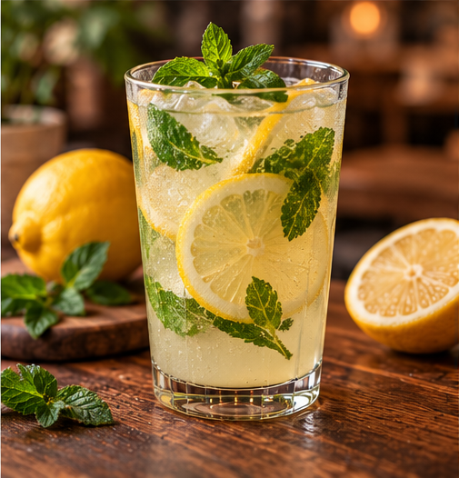
Limonada da Casa
Limonada artesanal preparada com limões frescos, folhas de hortelã e um toque especial da casa.
Preço: 3,20€
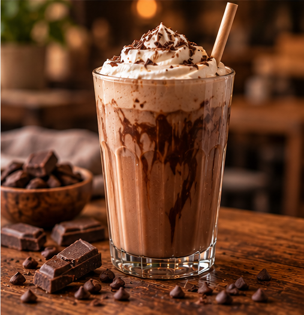
Chocolate Frio
Uma bebida cremosa de chocolate, leite fresco e gelo, perfeita para os amantes de chocolate.
Preço: 4,00€
Pastelaria e Doces
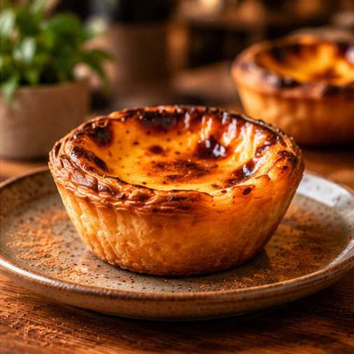
Pastel de Nata
Massa folhada crocante e recheio cremoso, com uma superfície ligeiramente caramelizada.
Preço: 1,80€
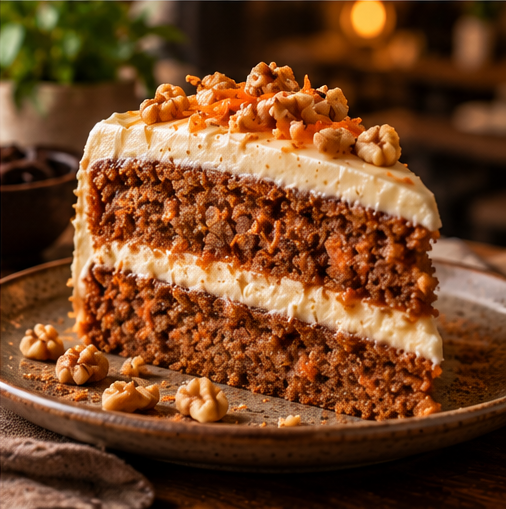
Bolo de Cenoura
Bolo caseiro de cenoura, recheado e coberto com creme suave, finalizado com nozes crocantes.
Preço: 3,50€
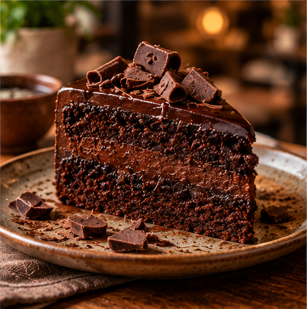
Bolo de chocolate
Bolo de chocolate intenso, com recheio cremoso, cobertura de ganache e pedaços de chocolate.
Preço: 3,80€
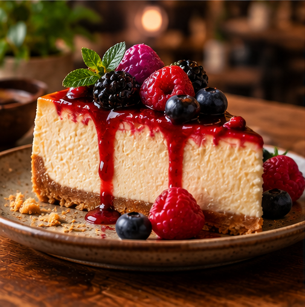
Cheesecake de Frutos Vermelhos
Cheesecake cremoso sobre uma base de bolacha, coberto com molho de frutos vermelhos e fruta fresca.
Preço: 4,90€
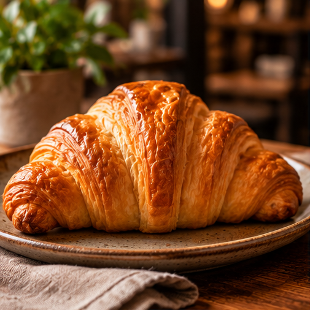
Croissant de Manteiga
Croissant artesanal de massa folhada, dourado e estaladiço por fora, leve e amanteigado por dentro.
Preço: 2,50€
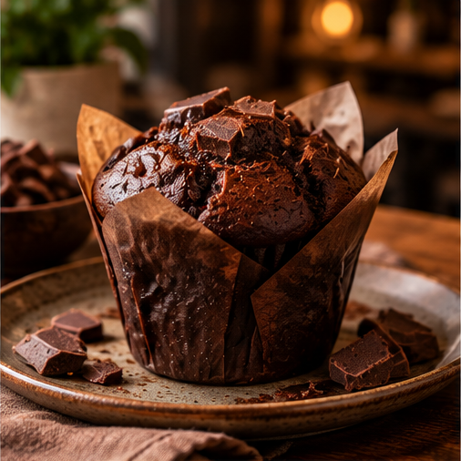
Muffin de Chocolate
Muffin fofo de chocolate, com pedaços generosos de chocolate e um sabor intenso a cacau.
Preço: 2,90€
O Nosso Brunch
Começa o dia da melhor forma com o brunch do Grão & Alma. Descobre uma seleção de pratos preparados com ingredientes frescos, sabores irresistíveis e aquele toque especial que torna cada momento único.
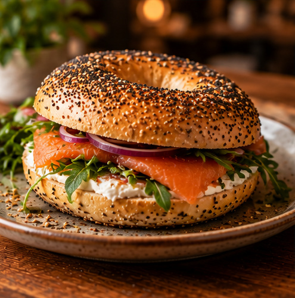
Bagel de Salmão
Bagel artesanal com salmão fumado, queijo creme, cebola roxa e rúcula fresca, numa combinação leve e irresistível.
Preço: 8,90€
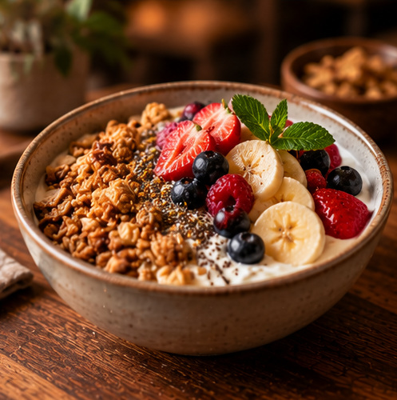
Bowl Energético
Uma taça de iogurte cremoso com granola crocante, banana, morangos, frutos vermelhos e sementes, perfeita para começar o dia.
Preço: 7,50€
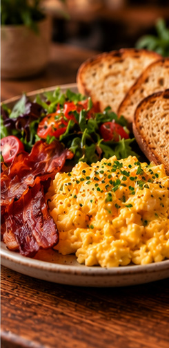
Brunch Grão & Alma
Ovos mexidos cremosos, bacon crocante, pão artesanal torrado e uma salada fresca. Uma combinação completa e cheia de sabor.
Preço: 12,50€
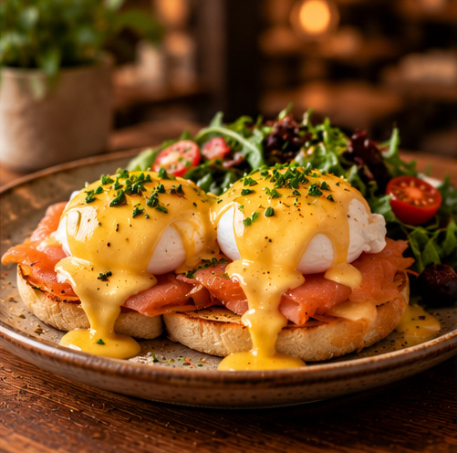
Ovos Benedict
Ovos escalfados sobre pão tostado com salmão fumado, cobertos com molho holandês cremoso e finalizados com ervas frescas.
Preço: 10,50€
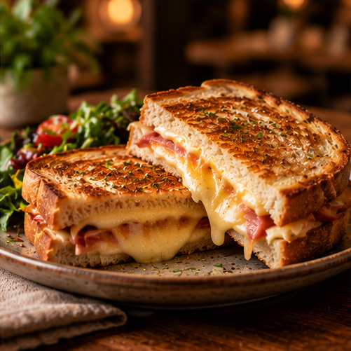
Sanduíche de Queijo
Pão artesanal tostado com queijo derretido e fiambre, preparado até ficar dourado e crocante por fora e cremoso por dentro.
Preço: 6,50€
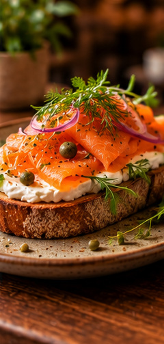
Tosta de Salmão
Pão artesanal crocante com queijo creme, salmão fumado, cebola roxa, alcaparras e ervas aromáticas frescas.
Preço: 8,50€
A Nossa História
O Grão & Alma nasceu da paixão pelo café e pela vontade de criar um espaço especial no coração do Porto. Acreditamos que cada chávena conta uma história e que os melhores momentos são aqueles que partilhamos. Com ingredientes de qualidade e um ambiente acolhedor, queremos fazer de cada visita uma experiência única.
Visita-nos
Localização: Porto, Portugal
Horário de funcionamento:
- Segunda a sexta: 08h00 - 19h00
- Sábado: 09h00 - 18h00
- Domingo: Encerrado
Telefone: +351 220 000 000
Email: ola@graoealma.pt
A Tua Opinião Conta
No Grão & Alma, valorizamos a opinião de quem nos visita. Partilha as tuas sugestões e ajuda-nos a tornar cada experiência ainda mais especial.